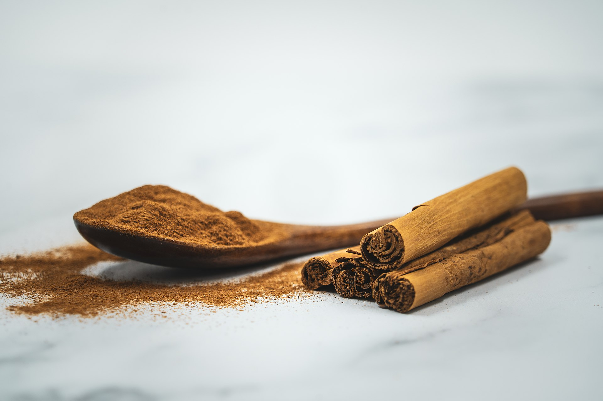

Cinnamon

Common Name: Cinnamon
Genus Species: Cinnamomum zeylanicum
Family: Lauraceae
Origin: Ceylon, Western India (Malabar Coast)
Cultivation: Sri Lanka, East and West Indies, Mauritius, Reúnion, southern India, Burma,
Malaysia, Vietnam
Description: Cinnamon is usually regarded as the bark of the Cinnamomum zeylanicum tree;
it is known as canela in Portugal and Spain, cannelle in France, and Zimt in Germany. In
India and Iran, it is called darchini, meaning “wood from China”, which more accurately
describes cassia. The original name came from the Malay word, “kayumanis”, meaning sweet
wood. The Hebrew equivalent was “qinnämön”, and this is the source of the word cinnamon.
The word canella was used by the Italians to describe as “little cannon tubes” that the
rolled up quills of bark resembled. The cinnamon (or cassia) trade was controlled by
Venice in the 13th and 14th centuries, and resulted in the city becoming very wealthy.
The Egyptians used cinnamon and cassia along with myrrh in embalming, perhaps because
cinnamic acid (and also myrrh) has antibacterial effects. The Hebrews, and others, used
cinnamon and cassia in religious ceremonies, while in Mexico, Asiatic countries, Arabia
and North Africa it was valued in cooking. The Roman empire imported huge amounts of
cinnamon, and it may have been used mostly in perfumes and fragrances and to flavor
wines, but it was not favored as a cooking spice. In the Middle Ages and subsequently,
cinnamon, was imported from Egypt, having been brought there by Arabian traders who
obtained it in Ceylon. It became a favorite flavor in many banquet foods and was
regarded as an appetite stimulator, a digestive, an aphrodisiac, and a treatment for
coughs and sore throats. Currently, in America cinnamon is mainly used to flavor
desserts and condiment, while powder and quills (which may be cassia) are fashionable
components of expensive drinks of coffee. True cinnamon is very popular in Mexican
cooking and in coffee and tea. It is probable that Egyptian cinnamon in Pharaonic times
was mainly cassia, much of which came from China where large groves of trees grew around
the city of Kweilin (now called Guilin): “kwei” means cinnamon, and “lin” means forest.
The true cinnamon of Ceylon (now called Sri Lanka) was “discovered” by the Portuguese in
the early 16th century, who thenceforth controlled the trade with great cruelty. An
increasing demand for cinnamon led to the Dutch fighting the Portuguese, and in the
mid-17th century Ceylon’s cinnamon trade was taken over and controlled by Holland. In
the 18th century, many Dutch were massacred in Sri Lanka in an effort to break the cruel
rule of the new colonialists, but this led to reprisals and a subsequent growth in
Portuguese control of the island’s cinnamon plantations. The Dutch forcefully
monopolized cinnamon; to keep up prices in 1760, they burnt huge amounts in Amsterdam to
create a shortage. Perhaps this hostile act convinced cinnamon fanciers in other
countries that the spice was being over-utilized in gourmet cooking. Nevertheless, in
1795, the English seized control of Ceylon hoping to revive interest in cinnamon. Before
long, however, cinnamon saplings were transplanted by the Dutch for cultivation in
Indonesia and by the French to plantations in Mauritius, Reunion and Guyana. The
importance of cinnamon from Ceylon continued to gradually decline as this spice became
less fashionable in cooking and in wine making. It is of interest that cinnamon now
grows in Egypt, where in the 19th century, it was introduced by the French who planted
saplings that had been grown in the Jardin des Plantes of Paris. However, after that
time the importance of cinnamon in French cooking waned, whereas it still persists in
traditional recipes of French Canada. Currently, cinnamon is regarded as a wonderful
aroma in baked goods, but its taste is of limited appeal. Similarly, it is not greatly
favored as a medication or as a food preserver or as an incense. In view of its huge
popularity and the enormous struggles involved in its trade over the past millennium,
this ancient spice undoubtedly merits greater appreciation today.
Recipes that Use Cinnamon: